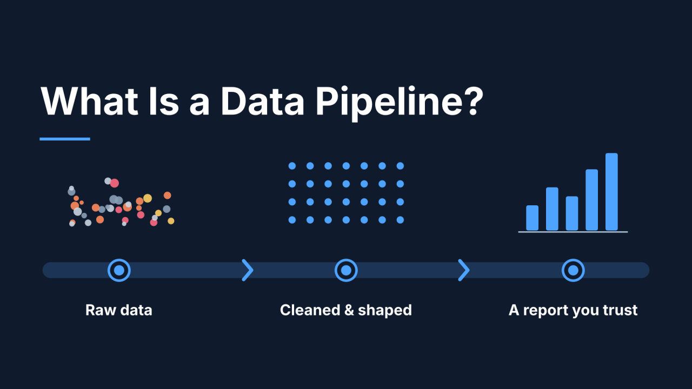
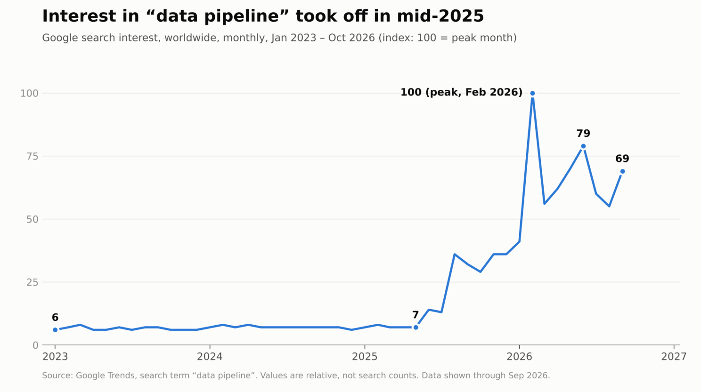
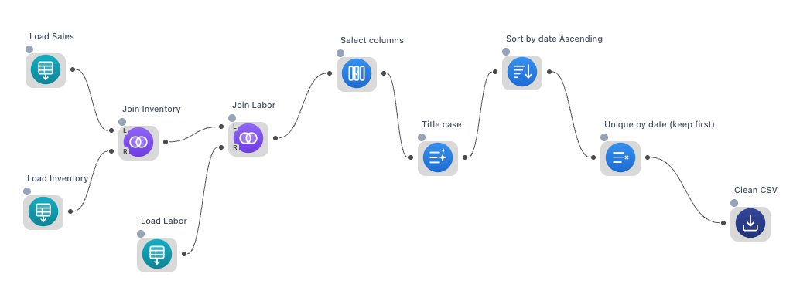

What is a data pipeline? A restaurant-kitchen explanation

TL;DR
A data pipeline is the process of taking data from a source, cleaning it up, and delivering it somewhere else to be used. A metaphor I like to use is that of a restaurant kitchen. First, a supplier delivers raw ingredients (data sources) to the kitchen. Next, a cook inspects, cleans, and prepares those ingredients (data cleaning). Finally, a chef combines the ingredients to produce a dish (report) that is served to customers.
A one sentence definition
A data pipeline is the process of moving data from A to B, while cleaning and transforming it along the way.
Why do I keep hearing this term?
Like everything else these days, the answer is AI. Having clean, well-modeled data matters if you want to get quality results using AI. To tie it back into the kitchen metaphor, if you use spoiled tomatoes to make a marinara sauce then the end result will be...not great. How do you get clean, well-modeled data? Data pipelines.
According to Google Trends, search interest for 'data pipeline' has 10x'd since 2023. It 3x'd in 2025 and has 4x'd since then.

What the heck happened in Feb 2026?
What a data pipeline can replace in your week
- Exporting the same data from SaaS tools or other sources
- Copying data from spreadsheet A into spreadsheets B, C, and D
- Using VLOOKUPs to match names or IDs
- Formatting the same columns over and over (title casing, trimming whitespace, etc)
- Finding and removing duplicate rows
- Filtering or filling in null values
- Having files called "final_v3.xlsx"
What a pipeline is not
- A report or dashboard. A report is the artifact consumed by a customer - a dish. The pipeline is like the SOP a kitchen follows to produce that dish.
- Magic. No matter how good the recipe for making pasta primavera is, if the kitchen uses incorrect or spoiled ingredients, the result is going to be terrible. Likewise, if the data feeding the pipeline is wrong, the output is going to be wrong.
- A one-and-done project. As with a restaurant kitchen whose suppliers or customers change, pipelines need upkeep, evaluation, and change.
Real world example
A restaurant needs to generate a weekly report profit-and-loss statement. Sales come from the POS, labor is in the scheduling software, and inventory costs are in an spreadsheet. Each week, someone has to pull each file, clean them up, and combine them into a report.
Whether it's 100% automated or done completely by hand, that process I just described is a data pipeline. The degree to which you automate it, however, depends on your resources and technical skills. For organizations with more resources, the answer is data engineers and tools like Alteryx. For smaller ones, the options are to do it manually in excel or, alternatively, learn Python or SQL to write the scripts yourself.
Another way?
Recently, I stumbled upon a tool called Flowfile. Flowfile lets you build a data pipeline on a canvas where each node handles some type of transformation, combining operation, aggregation, or output operation.
In the pipeline below, I load data from 3 different CSV files that I dropped onto my desktop, join them together, drop unwanted columns, title case all of the text columns, filter out rows with missing values, and output a clean CSV that I can build my weekly report on. This process remains the same every week, all I need to do is click the "run" button or have it run on a schedule (also possible in Flowfile).
Check out my video walk-through of Flowfile, available on my YouTube channel.

Build data pipelines on a canvas with flowfile.io
Takeaways
- A data pipeline is a repeatable process that converts raw data into clean data using the same steps each time.
- It's like a kitchen. Raw ingredients go in, are prepped according to SOPs, and then get served to diners as a finished dish.
- It's not a report, it's the reproducible steps that allow you to produce a report consistently.
- Garbage in, garbage out. You might have the best kitchen and top chefs in the world, the output still depends on the quality of the raw ingredients.
- Pipelines need maintenance as data sources and end-user needs change.
- You don't need a computer science degree to get started. Pick a simple report you rebuild by hand each week, write down each step, and then see how many of the steps you can automate using a tool like Flowfile, Python, or SQL.